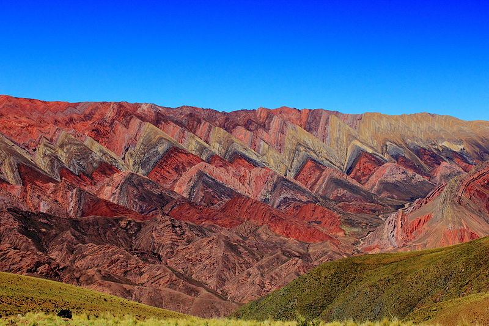

𝑪𝒂𝒎𝒑𝒐 𝑫𝒆 𝑷𝒊𝒆𝒅𝒓𝒂 𝑷𝒐𝒎𝒆𝒛

Sus formaciones de roca porosa blanca con crestas rosadas y grises crean un contraste visual único en el mundo, muy valorado por la fotografía de paisaje.
Sus formaciones de roca porosa blanca con crestas rosadas y grises crean un contraste visual único en el mundo, muy valorado por la fotografía de paisaje.

Una gigantesca masa de hielo de 60 metros de altura en el Parque Nacional Los Glaciares, famosa por sus rupturas periódicas

Un macizo montañoso en Purmamarca cuyas laderas exhiben distintas capas minerales de colores vibrantes

Un sistema de 275 saltos de agua en medio de la selva paranaense, coronado por la imponente Garganta del Diablo.

El segundo humedal más grande de Argentina, caracterizado por sus bosques inundados ("champales") y su enorme biodiversidad de aves y fauna autóctona.

Un desierto blanco de más de 200 km² ubicado a más de 3.400 metros sobre el nivel del mar, con piletones de agua turquesa.

Un cañón desértico con paredones de roca rojiza de hasta 150 metros de altura y yacimientos paleontológicos del período Triásico

Una reserva natural en la costa patagónica, clave para el avistaje de ballenas francas australes, pingüinos, orcas y lobos marinos.

Famoso por sus playas paradisíacas, el carnaval de Río de Janeiro y sus paisajes tropicales llenos de naturaleza.

Una ciudad conocida por sus enormes rascacielos, hoteles de lujo, islas artificiales y construcciones sorprendentes.

Una ciudad costera famosa por sus playas, aguas cristalinas, edificios coloridos y su gran ambiente turístico.

Un país reconocido por la Torre Eiffel, sus hermosos paisajes, museos, monumentos históricos y su deliciosa gastronomía.

Un destino lleno de historia, famoso por el Coliseo romano, sus canales de Venecia, su arquitectura y sus comidas tradicionales.

Un país que combina tecnología moderna con antiguas tradiciones, templos, jardines y hermosos paisajes de cerezos.

Una antigua ciudad inca ubicada entre las montañas de Perú, reconocida por sus construcciones de piedra y su impresionante paisaje.

Famoso por sus enormes pirámides, las esfinges y sus antiguos templos, que conservan miles de años de historia.